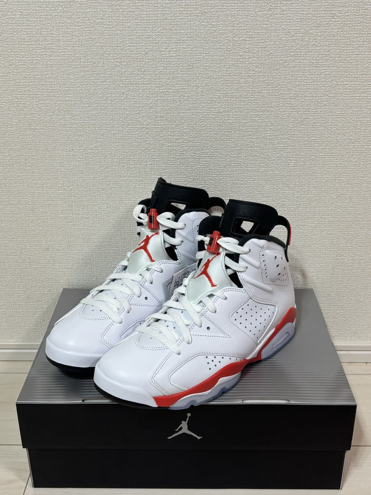

エアジョーダン6 インフラレッドが届いた。「入荷待ち」のメールから3日、開けてみた感想
11月7日に買った エアジョーダン6「ホワイト/インフラレッド」 が、11月11日に届きました。

買ってから届くまでのあいだに、ちょっと心配になることがあったので、そのことも合わせて書きます。
どんな靴か
- 名前：エア ジョーダン 6 レトロ「ホワイト/インフラレッド」
- 品番：CT8529-105
- 定価：32,340円（税込）
- 国内の発売日：2026年11月7日（土）
- 買ったところ：アトモスオンライン
- 買ったサイズ：27cm
エアジョーダン6は1991年に生まれたモデルで、2026年でちょうど35周年です。
このカラーの復刻は、2010年、2014年につづいて今回が3度目。前回から約12年ぶりになります。
今回の復刻は、ヒールのロゴが1991年の当時と同じ「NIKE AIR」になっています。
抽選には1回も応募しなかった
この靴は、どのお店の抽選にも応募していません。
発売日の11月7日の朝に、アトモスオンラインで買いました。
買えるまでの話は、動画にまとめています。
次の日に「入荷待ち」のメールが来た
買った次の日の11月8日に、アトモスからメールが届きました。
書いてあったのは、こんな内容です。
- 注文した商品は「現在、メーカーからの入荷待ち」
- 「原則、4〜7日での入荷」
- 「ご注文日から発送までに7〜10日前後」かかる場合がある
- 新しい在庫を用意できなかった場合は、「完売」判断で注文がキャンセルになる場合がある
いちばん気になったのは、最後のひとつです。
買えたはずの靴が、本当に届くのか。正直、心配でした。
とはいえ、できることは特にありません。
問い合わせもせず、何もせずに、ただ待っていました。
注文から4日で届いた
靴が届いたのは11月11日です。
注文した日から数えて4日。メールが来てからは3日でした。
メールには「7〜10日前後」と書いてあったので、目安よりも早く届いたことになります。
箱を開けてみた
箱を開ける前に、まず 箱のデザインがいい と思いました。
少し見づらいのですが、フタにジョーダンが写っていて、これが最高です。
箱を開けて実物を見たら、革の質感が上質な感じ がしました。思っていたよりも、いいです。
じつは届く前は、「バッシュ感が強くて、あんまりかな」と思っていました。
実物を見たら、ぜんぜん違いました。
サイズは27cmでちょうどいい
サイズは27cmを買って、ちょうどよかったです。
少しゆるめですが、そのぶん脱ぎ履きがしやすいので、自分にはちょうどいいと感じました。
気に入ったところ
いちばん気に入ったのは、やっぱり インフラレッドの色 です。
色味がシンプルなので、何にでも合わせやすそうだと感じました。
これからどう履くか
たくさん履きたい気持ちもあります。
ただ、白い靴で汚れやすいので、履いたときはしっかりケアをして、飾りながら履く つもりです。